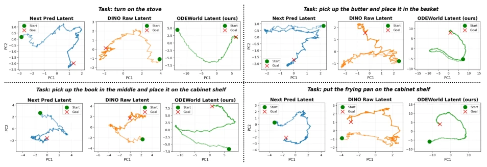
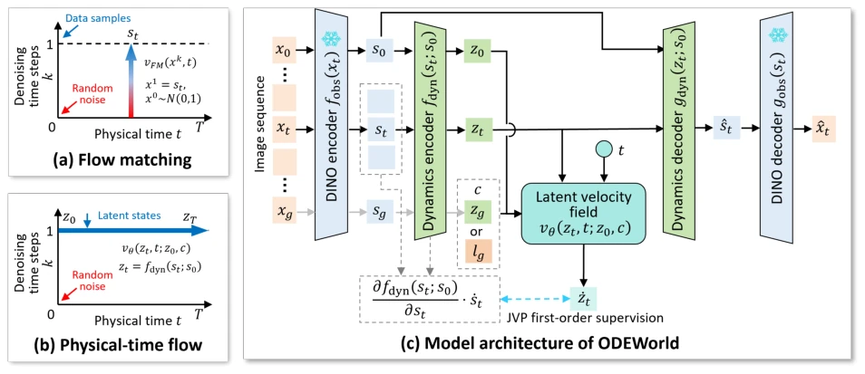
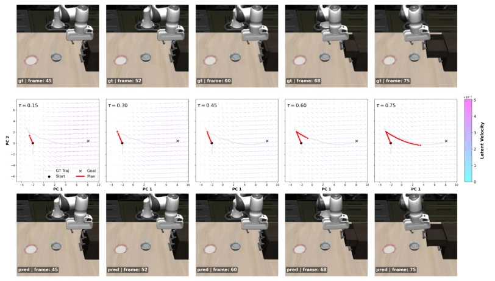
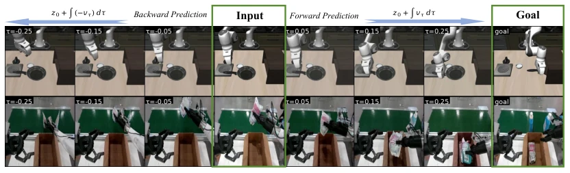
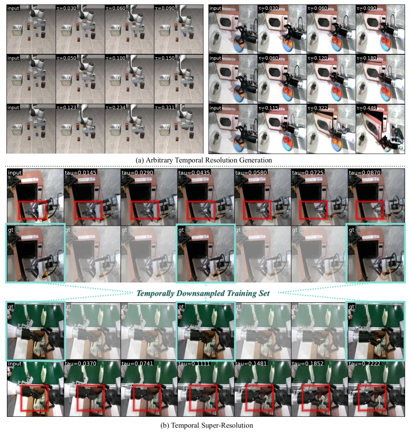
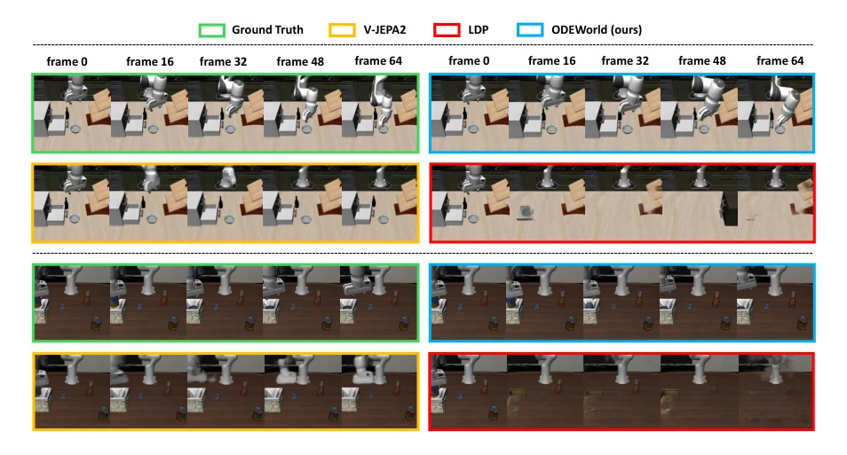
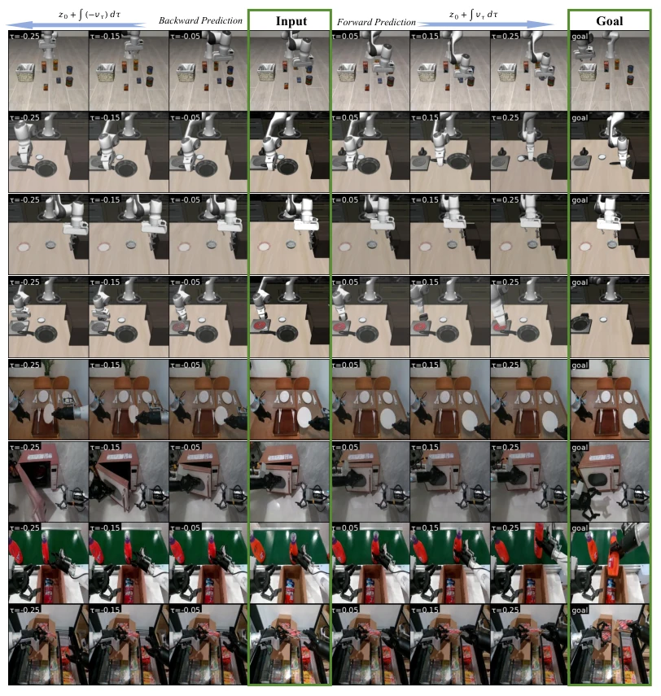
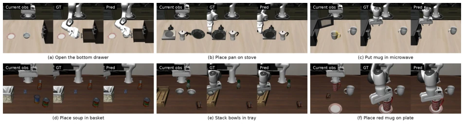

This paper finally treats time as a continuous variable, rather than rigidly slicing frames like traditional video models. PT-Flow uses an ODE solver for prediction, indeed achieving reverse generation and arbitrary resolution, which is superior to discrete models. However, relying on pre-trained DINO features, does it constitute true end-to-end physical modeling? Although JVP supervision resolves JEPA's representation collapse, it remains sensitive to noise; although Savitzky-Golay filtering is employed, whether the actual effect is robust under complex physical interactions still requires observation. Additionally, the cumulative error issue of the ODE solver during long-horizon reasoning is not discussed in depth. Overall, this is an elegant attempt at continuous world modeling, but it is still far from a true "physics engine", and computational overhead may increase with precision requirements, suitable for scenarios requiring high smoothness rather than tasks extremely sensitive to real-time performance.
研究动机Motivation
现实世界是连续的，但现有 AI 模型（如 Ho et al., 2022; Ha and Schmidhuber, 2018）大多基于离散时间步，导致处理不规则采样数据时效率低下，且难以内化高阶物理规律。JEPA 类模型（Assran et al., 2023; Bardes et al., 2024）虽高效，但常陷入表示坍塌，需额外正则化牺牲表达力。现有方法多为“视频模仿”，缺乏对物理动态的深层理解，难以支持长视界规划。此外，离散模型无法处理任意时间分辨率，限制了其在机器人控制中的灵活性。这种离散化假设与物理世界的连续性本质存在根本性冲突，导致模型在长视界预测中容易累积误差，且无法进行反向推理，限制了其在具身智能中的广泛应用潜力。
The real world is continuous, but existing AI models (e.g., Ho et al., 2022; Ha and Schmidhuber, 2018) are mostly based on discrete time steps, leading to low efficiency when processing irregularly sampled data and difficulty in internalizing higher-order physical laws. JEPA-like models (Assran et al., 2023; Bardes et al., 2024) are efficient but often fall into representation collapse, requiring additional regularization that sacrifices expressiveness. Existing methods are mostly "video imitation", lacking deep understanding of physical dynamics and difficult to support long-horizon planning. Additionally, discrete models cannot handle arbitrary time resolution, limiting their flexibility in robot control. This discretization assumption fundamentally conflicts with the continuous nature of the physical world, causing models to easily accumulate errors in long-horizon prediction and unable to perform reverse inference, limiting their broad application potential in embodied intelligence.

Figure 2 Data trajectories in different latent spaces. ODEWorld produces significantly smoother trajectories in its dynamical latent space across various LIBERO tasks compared to the latent spaces of DINO and the next-step prediction baseline.
Overall flow: First use frozen DINOv2 to extract features, then extract pure dynamic latent variables zt via dynamic encoder/decoder conditioned on initial state. The core is PT-Flow, learning the continuous velocity field v_theta under physical time. Innovations: 1) Dynamic representation decoupling, encoder/decoder conditioned on s0, isolates static background, preventing zt from carrying redundant information, ensuring latent space focuses on dynamic changes; 2) Direct first-order supervision, using JVP projection to calculate real velocity ˙zt to supervise v_theta, avoiding collapse caused by indirect consistency loss, this is the key distinction from JEPA. During inference, RK4 solver is used to integrate latent variables, supporting arbitrary time steps and reverse prediction. Additionally, Savitzky-Golay filtering is introduced to optimize velocity estimation, ensuring numerical stability. Velocity field parameterized by lightweight MLP, time t injected via FiLM layer, finally achieving efficient and high-fidelity video generation and planning.

Figure 1 Illustration of PT-Flow and ODEWorld. (a), (b) Comparison between flow matching and our proposed PT-Flow. Although both methods learn time-dependent velocity fields and perform generation with ODE solvers, their notion of time and design philosophies are completely different. (c) Model architecture of ODEWorld.

Figure 3 Velocity field and latent planning. Middle are visualization of globally consistent goal-directed convergence of velocity field and smooth latent plans from ODEWorld that adhere well to the ground truth. The top are ground truth frames, and the bottom are synthesized frames.
Tested on LIBERO simulation and AgiBot-World real robot datasets. Baselines include LDP, V-JEPA 2, SuSIE, etc. Video generation metrics PSNR/LPIPS are better than baselines, long-horizon prediction is clearer, latency significantly reduced. In terms of strategy learning, ODEWorld-generated latent subgoals increased real robot task success rate from 55% to 80%. Ablation shows direct velocity supervision effectively prevents representation collapse. Supports functions discrete models cannot achieve, such as time super-resolution and reverse prediction. On LIBERO-LONG, average success rate is 83.6%, better than GLCBC and Seer. Visualization shows latent trajectories are smoother, velocity field conforms to physical laws.

Figure 4 The continuous formulation enables ODEWorld to perform both forward and backward prediction, with motion consistent with real-world dynamics. We present the results on LIBERO benchmark and Agibot World. More results are provided in the Appendix.

Figure 5 ODEWorld allows any resolution generation with flexible temporal speed. Based on this, ODEWorld can generalize beyond the sampling rate of the training data. In particular, when trained on temporally downsampled sequences, the model is able to generate smooth and coherent intermediate frames, performing temporal super-resolution and filling in missing observations.

Figure 9 ODEWorld enables long-horizon video generation in the LIBERO simulation environment, producing temporally coherent and physically plausible videos that closely match the ground-truth observations. In contrast, our baseline methods LDP and V-JEPA 2 often suffer from blurry visual predictions and dataset-induced hallucinations in long-horizon generation, especially at later frames, such as frame 64.

Figure 10 Additional visualization results of bidirectional prediction.
其他图片Other Figures

Figure 8 Qualitative results of the goal image predictor. Given the current observation and a language instruction, the goal image predictor generates a semantically consistent goal image for ODEWorld.